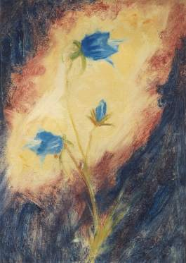

Onbegrepen Licht
‘Onbegrepen licht’ is een ander belangwekkend werk, waarin Prantl o.a. de bijbelse evangeliën en de openbaring van Johannes in eigentijdse taal en moderne spirituele inzichten verwoordt . Het toont een nieuw inzicht en geeft een antwoord op de vragen, die gesteld worden door degenen die niet meer tevreden zijn met de kerkelijke dooddoeners en zelf willen leren nadenken.
Bij velen leeft het idee dat 'esoterisch' identiek met 'verborgen' of 'geheim' zou zijn. Maar de werkelijkheid is veel simpeler. Het is te vergelijken met de situatie, waarin we een kind van de basisschool de aantekeningen van Einstein of een partituur van Beethoven laten bestuderen - het kind begrijpt er gewoon niets van, hoe openlijk het ook voor zijn ogen ligt. Een betere bescherming van de inhoud tegen oningewijde ogen is nauwelijks denkbaar. 'Esoterie' of 'onbegrepen licht' heeft dus duidelijk meer verwantschap met het 'onbegrip' en 'onvermogen' van de niet-begrijpende lezer/beschouwer. Het is het soort verblinding dat optreedt wanneer we recht in de zon kijken. Het is dit onvermogen, deze beperking van ons aardse verstand, waar Prantl herhaaldelijk op duidt: geestelijke zaken zijn met ons verstand en andere gebruikelijke instrumenten niet te vatten, maar alleen in te voelen en te beleven.
De ondertitel 'Mystieke verantwoordelijkheid' is gekozen als kernachtige aanduiding van waar het Max Prantl om te doen is. Dat wij als aardse mensen moeten leren onze verantwoordelijkheden onder ogen te zien zal vrijwel iedereen beamen. Dat wij echter ook op het geestelijke vlak soortgelijke verantwoordelijkheden hebben, zullen niet velen beseffen of willen weten. Toch is dat precies wat Prantl voor ogen staat in al zijn geschriften. Het is tevens de centrale grondtoon van de geschriften die in deze bundel bijeen zijn gebracht, namelijk de dringende oproep aan de mensheid om nu eindelijk eens 'wakker' te worden.
Ook zijn in dit boek Prantls 'profetische' geschriften opgenomen, waarin hij de positie en verantwoordelijkheid van de mens tegenover God en tegenover zijn eigen bestaan duidelijk en scherp weergeeft. Hier is geen ruimte meer voor vrijblijvendheid, hier wordt een duidelijke keuze van ons verwacht.
Citaten
De belijdenis van Christus
‘U, mijn eeuwige oorsprong, schepper, instandhouder en leider van al het tot gestalte gekomen leven in het oneindige heelal, met wie ik qua wezen één ben, u hebt uw en mijn wezen voor de aanmatigende, harteloze, liefde- en vertrouwenloze verstandswijzen verborgen, maar voor degenen zonder pretenties geopenbaard. Zo is uw en mijn wil.
Alle macht om te leiden en vorm te geven hebt u mij toevertrouwd om op aarde uw wezen te openbaren. Niemand dan u kent mij helemaal en niemand behalve ik en zij, aan wie ik het wil openbaren, kennen uw wezen.
Kom allemaal naar mij, voor wie het aardse leven tot een last is geworden. Ik wil jullie naar de bron van het ware, grotere leven leiden. Neem mij aan als jullie leidsman en erken mij en mijn leer. Bij mij zullen jullie de innerlijke vrede vinden, want ik ben liefdevol en zonder pretenties vanuit mijn diepste wezen. Ik leid iedereen naar het doel van zijn eigen wil, ik doe hem geen geweld aan, ik beheers en dwing niemand; het is gemakkelijk je aan mij toe te vertrouwen’.
De zonde tegen de Heilige Geest
‘Wie niet voor mij is, is tegen mij. Wie niet verzamelt, verstrooit. Iedere zonde en lastering wordt de mensen vergeven, behalve de zonde tegen de Geest. Wat iemand tegen mij als aardse persoonlijkheid zegt, dat reken ik hem niet aan. Maar wie zich opzettelijk en volkomen bewust tegen mij als goddelijke persoonlijkheid, als Wereldwil, als stem van het geweten richt, die sluit zichzelf voor altijd uit van het eeuwige leven.
Jullie zoeken voorwendselen om mij af te wijzen. Maar jullie zien hoe ik leef, en jullie horen wat ik leer. Wie mij wil kennen, die kent mij. Wie ‘ja’ tegen mij zegt, zal ook mijn leer beamen. Wie ‘nee’ tegen mij zegt, zal ook mijn leer ontkennen. Daarmee beslist hij over zichzelf. Wie mij beaamt, beaamt zichzelf als goddelijke persoonlijkheid. Wie mij ontkent, ontkent zichzelf als kind van de Oneindige Liefde. Want ik verlang niets anders van jullie dan het vervullen van jullie eigen goddelijke wil. Zo kiest iedereen zelf licht of duister, eeuwig leven of geestelijke dood, al naargelang hij mij in de stem van zijn geweten beaamt of ontkent’.
De transformatie
Dat Jezus hangend aan het kruis werkelijk gestorven was werd door de Romeinse soldaten vastgesteld op een manier die iedere twijfel uitsluit, namelijk door een lanssteek in de borst, die reeds geronnen bloed (bloed en water) eruit liet stromen. Dat het in aardse zin dode lichaam van Christus letterlijk en werkelijk tot een licht-lichaam transformeerde, dat boven de gebruikelijke en schijnbaar dwingende wetten van de materie stond, kan alleen maar onbegrijpelijk zijn voor wie Christus niet als de tot gestalte gekomen Wereldwil erkent. Voor iemand met geestelijk inzicht is immers het materiële heelal en het daaraan ter wille van geestelijke ontwikkeling gebonden leven maar één ding, de laagste vorm van bestaan, die in eenheid met de Wereldwil, met Christus, op ieder moment naar andere vormen van bestaan overgebracht kan worden. Aan de wereld werd dit slechts één keer getoond, als volledige overwinning op de materie en de aardse dood, anders zou de wereld deze - op zichzelf vanzelfsprekende - materiële transformaties als belangrijker beschouwen dan de veel betekenisvollere geestelijke ontwikkeling naar de goddelijke waarheid toe. De opstanding van Christus heeft de angst voor de aardse dood gebroken voor allen die in en met Christus leven en heeft daarmee voor allen het uiterste - onvoorwaardelijke - vertrouwen op God gemakkelijk gemaakt.
De overwinning van het licht, de transformatie tot zonneklare helderheid
In de ochtendschemering van de Paasdag nam Christus zijn dode menselijke lichaam weer tot zich en toonde zich eerst aan Maria Magdalena, de vertegenwoordigster van de in het diepst van haar hart gelovige mensheid, in de menselijke gedaante die allen die op aarde leven gemeenschappelijk hebben. Om voor de mensheid het begrip voor zijn ware wezen - het eeuwige leven van allen die gestalte hebben aangenomen - gemakkelijker te maken, gaf Christus eerst zijn dode aardse lichaam het leven terug en toonde later ook aan zijn metgezellen de aards-materiële realiteit ervan. Toch bezat hij volledige vrijheid om lichamelijk te verschijnen (hij kwam door gesloten deuren - verdichten en weer oplossen van het materiële lichaam).
Het verschijnen in zijn aardse lichaam was een hulpmiddel om Christus te begrijpen als eeuwige levenskracht van allen die gestalte hebben aangenomen. Hij wilde echter niet voor altijd als aards begrensde gestalte opgevat worden, maar als Heilige Geest van waarheid en leven, één in wezen met de tot gestalte wordende Oneindige Liefde (zie zijn woorden tot Maria Magdalena: ‘Hou mij niet vast! Want ik ben nog niet opgevaren naar mijn vader’).
Iedereen moet Christus echter opnemen en vasthouden als de Heilige Geest des levens: de uitstraling van Christus vanuit zijn wezenlijke eenheid met de tot gestalte wordende en gestalte gevende ONEINDIGE LIEFDE.
Het uitgieten van de schalen
Ik hoorde een luide stem uit de tempel de zeven engelen toeroepen: ‘Ga en giet de zeven schalen van Gods toorn uit op de aarde’.
De eerste ging en goot zijn schaal op aarde uit. Erge en kwaadaardige gezwellen vielen op alle mensen, die het merkteken van het dier droegen en zijn beeld aanbaden.
* Door het beeld van het kankergezwel kenschetst Johannes het verval van de ziel, het verzet en het woekeren van de deelkrachten van de ziel (verstand, gevoel, aardse levenswil) in de mensen die aan de materialistische wereldbeschouwing en de groeperingen daarvan ten prooi zijn gevallen. Wie de goddelijke waardigheid van de mens en daarmee het kennen van de Oneindige Liefde zelf in zichzelf en in anderen afwijst, vernietigt zijn eigen hartscentrum en beleeft het opstandige verzet en het overwoekeren, de wederzijdse doodsvijandschap van zijn aardse zielekrachten (het intelligente beest, beheerst door het overwoekerende verstand dat geen leiding meer heeft en de gevoelens verwoest, of de driftmatige mens, beheerst door de gevoelens die geen leiding meer hebben en dus tot genotzucht en verwoestende hartstochten opgezweept worden, of de brutale wilsmens, gewelddadig van natuur, geestloos en primitief). *
De tweede goot zijn schaal in zee uit. Deze werd als het bloed van een dode en ieder levend wezen in zee stierf.
* De tot nu toe levend stromende zee, de aardse zielenwereld en daarmee tevens het collectieve onderbewustzijn van de mensheid, stolt en valt uiteen in zijn bestanddelen (het bloed van een dode is zwart, geronnen bloed dat uiteenvalt in goudkleurige bloedvloeistof - serum - en zwart geworden bloedlichaampjes): scheiding der geesten in de zielenwereld, het vormen van ondubbelzinnig afgegrensde fronten tussen licht en donker. Deze gebeurtenissen slaan over op het onderbewustzijn van ieder individueel, rijp geworden mens en scheppen de voorwaarde voor de volledig bewuste, definitieve keuze voor of tegen het goddelijke licht. Bij nog onrijpe mensen begint deze keuze zich af te tekenen. Ook voor hen is er geen ontwijken meer. - Ieder levend wezen in zee stierf: iedere persoonlijkheid in wording wordt (trapsgewijze) getransformeerd. *
De derde goot zijn schaal uit in de rivieren en waterbronnen en deze werden tot bloed.
* De rivieren en waterbronnen zijn het dagbewuste aardse zieleleven (behorend tot het vasteland, het zekere dagbewustzijn) - Ze werden tot bloed: het volledig bewuste gedachten- en gevoelsleven van de mensen wordt opgezweept en tot aan de grens van het mogelijke gedreven, opdat de mensen door de ontstaande chaos eindelijk de grenzen van het aardse denken en voelen onderkennen en vanuit het innerlijke gevoel voor de waarheid, vanuit het geweten, vanuit hun goddelijke hartscentrum leven. *
De vierde goot zijn schaal uit op de zon. Toen werd het haar gegeven de mensen met vuur te verzengen. De mensen werden door een hevige gloed verzengd. Desondanks lasterden zij de naam van God, die de macht over deze plagen bezit. Zij veranderden hun instelling niet en gaven hem niet de eer.
* Omdat de mensheid als geheel de goddelijke waarheid (de zon) nooit als verlichtend en verwarmend licht heeft willen opnemen, werpt deze nu in het wereldtijdperk van transformerende kracht haar stralen als een vermorzelende schittering op aarde. De mensheid voelt deze in eerste instantie als een onbarmhartige gloed en antwoordt met hoon en haat. - Zij veranderden hun instelling niet: ze verzetten zich tegen de transformatie van hun hart en tegen het ontwaken. *
De vijfde goot zijn schaal uit op de troon van het dier, en zijn rijk werd verduisterd. De mensen beten van pijn hun tongen stuk. Zij lasterden de God des hemels vanwege hun pijn en gezwellen. Maar ze bekeerden zich niet van hun doen en laten.
* De troon van het dier: het centrum van de zucht naar macht, tegenwoordig Moskou. - Het uitgieten van de schalen: openlijke oorlogsverklaring van de geestelijke machten tegen Moskou, het onthullen van het sovjetsysteem als duivels maakwerk, verduistering en vernietiging van de materialistische wereldbeschouwing. - De mensen beten hun tongen stuk van pijn: woede en vertwijfeling drijft de tot materialisme vervallen mensen en groeperingen tot zelfvernietigende daden. - Zij lasterden God: ze spugen op de goddelijke waarheid. *
De zesde goot zijn schaal uit op de grote rivier de Eufraat. Het water ervan droogde op, opdat voor de koningen van de opgang van de zon de weg vrijgemaakt zou worden. En ik zag uit de muil van de draak, uit de muil van het dier en uit de muil van de valse profeet drie onreine geesten als kikkers tevoorschijn komen, duivelse geesten, die tekenen doen en naar de leiders van de hele wereld gaan om hen voor de grote dag van de almachtige God tot de strijd te verzamelen.
‘Zie, ik kom als een dief. Zalig wie wacht en zijn kleren bewaart, zodat hij niet naakt rondloopt en men zijn schande ziet’. - Zij verzamelden hen op de plaats die in het Hebreeuws Harmagedon heet.
* De grote rivier de Eufraat: de scheppende geestelijke levensstroom van de mensheid, de bevruchter van de woestijn, het algemene scheppen van cultuur. Deze stroom wordt mager en droogt op, over het geheel gezien, opdat voor de koningen van de opgang van de zon, voor de tot goddelijke zonneklare helderheid ontwaakte leiders van de mensheid de wereld open staat, omdat deze gebrek aan geestelijke goederen lijdt (cultuurcyclus van de huidige tijd, de ‘ondergang van het avondland’, een stemming van ‘ondergang van de wereld’ die bereid maakt voor het nieuwe). - De draak: Lucifer, de als zielegestalte belichaamde aanstichter van alle heerszucht. - Het dier: het sovjetsysteem. - De valse profeet: Stalin, die zich als bevrijder, als verlosser van de wereld opstelt (de ‘antichrist’). - Drie onreine geesten als (glibberige, moeilijk te pakken) kikkers: achterbakse, kwaadsprekerige propaganda die de eigen misdaden poogt te verbergen en ze tegenstanders in de schoenen tracht te schuiven. - Zij doen tekenen: protserige propaganda. – Ze gaan naar de leiders van de hele wereld om hen voor de grote dag van de almachtige God tot de strijd te verzamelen: ze spannen hun geheime net over de hele wereld. Voorbereiding op de eerste, tweede en derde wereldoorlog door de luciferische groeperingen (kapitalistische en communistische internationale bonden).
Zie, ik kom als een dief: wederkomst van Christus in iedereen die tot zonneklare helderheid ontwaakt is (unio mystica met de Wereldwil), dus verrassend, totaal anders dan de wereld verwachtte (ter wille van de vrij keuze, die door geen enkele dwingende voorspelling beïnvloed is). - Zalig wie waakt en zijn kleren bewaart: wakkere, oplettende, onbevooroordeelde toetsing van alle geestelijke verschijnselen (omdat Christus heel anders komt dan hij verwacht werd) en het gereed houden van de geestelijke wapenrusting (de kleren, omgang met vriend en vijand). - Zij (de duivelse geesten) verzamelden hen (de geestelijke leiders) op de plaats Harmagedon: de geestelijke slechte mensen bewerkstelligen de definitieve keuze in de enkeling en in de wereld. Hiertoe moet het geestelijk kwade zich in zijn uiterste verdorvenheid openbaren (het meer dan rijp worden van het onkruid). Voordat de enkeling en de wereld de angst voor het geestelijk kwade en het medelijden ermee kwijtraken, kunnen zij niet ontwaken. - Harmagedon: plaats van beslissing over zijn en niet-zijn (drempel van het ontwaken, hartscentrum, geweten) waar, begunstigd door de duivelse verduistering van de buitenwereld, alle krachten zich moeten verzamelen om de beslissende strijd voor het goddelijke licht met succes te doorstaan. Dit Harmagedon zal tevens overeenkomen met een plaats in de uiterlijke wereld als slagveld voor de definitieve keuze tussen de lichte en duivelse machten. *
De zevende goot zijn schaal uit in de lucht: toen kwam er een luide stem uit de tempel vanaf de troon: ‘Het is geschied’. - Daarop volgden bliksemflitsen, geraas en donderslagen. Ook ontstond er een zo enorm zware aardbeving als er sinds mensenheugenis nog geen geweest was. De grote stad viel uiteen in drie delen, en de steden van de volkeren stortten in. Zo werd voor God de grote stad Babylon herinnerd en werd haar de beker met de gloeiende wijn van Gods toorn aangereikt. Ieder eiland verdween en bergen vond men niet meer. Grote loodzware hagelstenen vielen uit de hemel op de mensen neer en zij lasterden God vanwege de hagel, want de plaag ervan was zwaar.
* Hij goot zijn schaal uit in de lucht: transformatie van het aardse luchtomhulsel, de atmosfeer als geheel, de voorwaarde voor al het hoger ontwikkelde leven op aarde, derhalve transformatie van de gehele hoger ontwikkelde levenswereld. - Het is geschied: afsluiting van het beslissende tijdperk van de wereldontwikkeling. - Bliksemflitsen, geraas, donderslagen, enorme aardbevingen: onverhoedse geestelijke verlichting van de wereld, vernietigingsoorlog, op onweer lijkende geestelijke schokken, het uit elkaar breken en instorten van wat verstard is en van de antigoddelijke machtsstructuren. - Zoals er sinds mensenheugenis geen geweest was: de meest geweldige omwenteling in de geestelijke geschiedenis van de mensheid tot nu toe. - De grote stad (Babylon) viel uiteen in drie delen: zie het ‘gericht over de hoer’. - Het uiteenvallen in drie delen: het in stukken breken van het getal drie, de aardse totaliteit, dus de volkomen vernietiging van Babylon, de grote hoer.
De steden van de volkeren stortten in: het stukbreken van de nationale zelfzucht, van nationale machtspolitiek. - Ieder eiland verdween: wegzinken van alle voor de gemeenschap gesloten afzonderlijke groepen, van eenzelvige afgrenzingen, van ‘ismen’. - Bergen werden niet meer gevonden: schijnbaar onwrikbare, eeuwige doctrines en dogma’s en machtsstructuren, die de vlakte - het ‘gewone volk’, de ‘massa der gelovigen’, de menselijke samenleving - beheersen en daarmee onvrij maken in plaats van ze tot vrijheid te leiden, zijn verdwenen. - Loodzware hagelstenen: vernieling van de oogst, de vruchten, de resultaten van alle inspanningen van de antigoddelijke machten tot nu toe. - Ze lasteren God: van haat vervulde teleurstelling van de aanhangers der duivelse machten. *